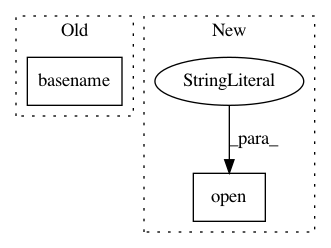

6db87ba04e5c298d5e4fa9c6e722b38d5fd0bdb7,mltsp/run_in_docker_container.py,,copy_data_files_featurize_prep,#Any#,41
Before Change
shutil.copy(args_dict["custom_script_path"], copied_custom_script_path)
args_dict["custom_script_path"] = os.path.join(
"/home/copied_data_files",
ntpath.basename(args_dict["custom_script_path"]))
args_dict["path_map"] = {args_dict["copied_data_dir"]:
"/home/copied_data_files"}
function_args_path = os.path.join(args_dict["copied_data_dir"],
After Change
args_dict["custom_script_path"] = os.path.join(
"/home/copied_data_files", "custom_feature_defs.py")
// Create __init__.py file so that custom feats script can be imported
open(os.path.join(args_dict["copied_data_dir"], "__init__.py"),
"w").close()
args_dict["path_map"] = {args_dict["copied_data_dir"]:
"/home/copied_data_files"}
function_args_path = os.path.join(args_dict["copied_data_dir"],
In pattern: SUPERPATTERN
Frequency: 3
Non-data size: 2
Instances
Project Name: cesium-ml/cesium
Commit Name: 6db87ba04e5c298d5e4fa9c6e722b38d5fd0bdb7
Time: 2015-04-21
Author: a.crellinquick@gmail.com
File Name: mltsp/run_in_docker_container.py
Class Name:
Method Name: copy_data_files_featurize_prep
Project Name: cesium-ml/cesium
Commit Name: 6db87ba04e5c298d5e4fa9c6e722b38d5fd0bdb7
Time: 2015-04-21
Author: a.crellinquick@gmail.com
File Name: mltsp/run_in_docker_container.py
Class Name:
Method Name: copy_data_files_predict_prep
Project Name: vatlab/SoS
Commit Name: f5487e3b76129b97f29365058d169c72cb37e3cf
Time: 2017-02-14
Author: ben.bog@gmail.com
File Name: sos/sos_step.py
Class Name:
Method Name: execute_task